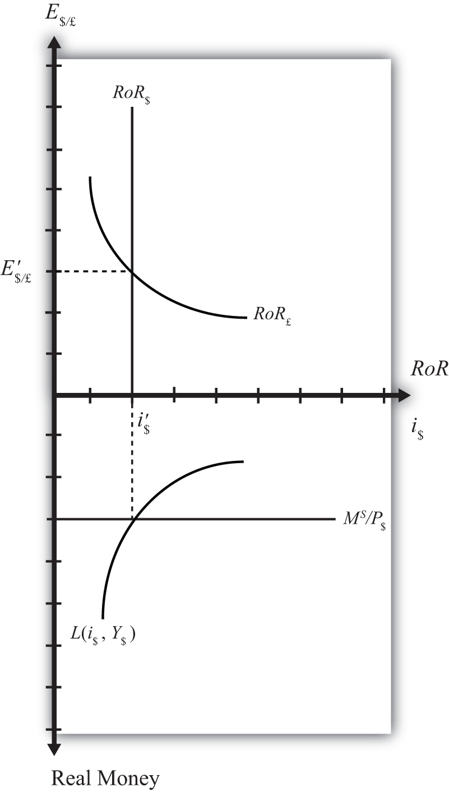

Money is a critical component of a modern economy because it facilitates voluntary exchanges. What exactly money is and how it fulfills this role is not widely understood. This chapter defines money and explains how a country’s central bank determines the amount of money available in an economy. It also shows how changes in the amount of money in a country influence two very important macroeconomic variables: the interest rate and the inflation rate.
This chapter describes how the supply of moneyAny asset that serves as a unit of account and can be used as a medium of exchange for economic transactions. It is all assets that have a high degree of liquidity. and the demand for money combine to affect the equilibrium interest rate in an economy. The model is called the money market modelA model showing how the supply of money and the demand for money combine to affect the equilibrium interest rate in an economy..
A country’s money supplyMostly, the amount of coin and currency in circulation and the total value of all checking accounts in banks. is mostly the amount of coin and currency in circulation and the total value of all checking accounts in banks. These two types of assets are the most liquid (i.e., most easily used to buy goods and services). The amount of money available to spend in an economy is mostly determined by the country’s central bank. The bank can control the total amount of money in circulation by using several levers (or tools), the most important of which is the sale or purchase of U.S. government Treasury bonds. Central bank sales or purchases of Treasury bonds are called “open market operationsRefers to central bank purchases or sales of U.S. government Treasury bonds or bills..”
Money demandRefers to the demand by households, businesses, and the government, for highly liquid assets such as currency and checking account deposits. refers to the demand by households, businesses, and the government, for highly liquid assets such as currency and checking account deposits. Money demand is affected by the desire to buy things soon, but it is also affected by the opportunity cost of holding money. The opportunity cost is the interest earnings one gives up on other assets to hold money.
If interest rates rise, households and businesses will likely allocate more of their asset holdings into interest-bearing accounts (these are usually not classified as money) and will hold less in the form of money. Since interest-bearing deposits are the primary source of funds used to lend in the financial sector, changes in total money demand affect the supply of loanable funds and in turn affect the interest rates on loans.
Money supply and money demand will equalize only at one average interest rate. Also, at this interest rate, the supply of loanable funds financial institutions wish to lend equalizes the amount that borrowers wish to borrow. Thus the equilibrium interest rate in the economy is the rate that equalizes money supply and money demand.
Using the money market model, several important relationships between key economic variables are shown:
The money market model connects with the foreign exchange (Forex) market because the interest rate in the economy, which is determined in the money market, determines the rate of return on domestic assets. In the Forex market, interest rates are given exogenously, which means they are determined through some process not specified in the model. However, that process of interest rate determination is described in the money market. Economists will sometimes say that once the money market model and Forex model are combined, interest rates have been “endogenized.” In other words, interest rates are now conceived as being determined by more fundamental factors (gross domestic product [GDP] and money supply) that are not given as exogenous.
The money market model also connects with the goods market model in that GDP, which is determined in the goods market, influences money demand and hence the interest rate in the money market model.
The key results from the money market model are the following:
Jeopardy Questions. As in the popular television game show, you are given an answer to a question and you must respond with the question. For example, if the answer is “a tax on imports,” then the correct question is “What is a tariff?”
There are several sources of confusion that can affect complete understanding of this basic model.
The first source of confusion concerns the use of the term “money.” In casual conversation, money is sometimes used more narrowly and sometimes more broadly than the formal definition. For example, someone might say, “I want to be a doctor so I will make a lot of money.” In this case, the person is really referring to income, not money, per se. Since income is typically paid using money, the everyday substitution of the term money for income does make sense, but it can lead to confusion in interpreting the forthcoming model. In general, people use the term money whenever they want to refer to a country’s coin and currency and anything these items are used for in payment. However, our formal definition of money also includes items that are not coin and currency. Checking account deposits are an example of a type of money included in the formal definition but not more casually thought of as money. Thus pay attention to the definition and description below and be sure to recognize that one’s common conception of money may or may not overlap precisely with the formal definition.
A second source of confusion involves our usage of the term interest rate. The model that will be developed will derive an equilibrium interest rate for the economy. However, everyone knows that there are many interest rates in the economy, and each of these rates is different. There are different rates for your checking and savings account, different rates on a car loan and mortgage, different rates on credit cards and government bonds. Thus it is typical to wonder what interest rate we are talking about when we describe the equilibrium interest rate.
It is important to note that financial institutions make money (here I really should say “make a profit”) by lending to one group at a higher rate than it borrows. In other words, financial institutions accept deposits from one group of people (savers) and lend it to another group of people (borrowers.) If they charge a higher interest rate on their loans than they do on deposits, the bank will make a profit.
This implies that, in general, interest rates on deposits to financial institutions are lower than interest rates on their loans. When we talk about the equilibrium interest rate in the forthcoming model, it will mostly apply to the interest rates on deposits rather than loans. However, we also have a small problem in interpretation since different deposits have different interest rates. Thus which interest rate are we really talking about?
The best way to interpret the equilibrium interest rate in the model is as a kind of average interest rate on deposits. At the end of this chapter, we will discuss economic changes that lead to an increase or decrease in the equilibrium interest rate. We should take these changes to mean several things. First, that average interest rates on deposits will rise. Now, some of these rates may rise and a few may fall, but there will be pressure for the average to increase. Second, since banks may be expected to maintain their rate of profit (if possible) when average deposit interest rates do increase, average interest rates on loans will also increase. Again, some loan rates may rise and some fall, but the market pressure will tend to push them upward.
The implication is that when the equilibrium interest rate changes we should expect most interest rates to move in the same direction. Thus the equilibrium interest rate really is referring to an average interest rate across the entire economy, for deposits and for loans.
Jeopardy Questions. As in the popular television game show, you are given an answer to a question and you must respond with the question. For example, if the answer is “a tax on imports,” then the correct question is “What is a tariff?”
The money supply in a country refers to a stock of assets that can be readily used to purchase goods and services. An asset is anything that has value. Anything that has value could potentially be used in exchange for other goods, services, or assets. However, some assets are more easily exchangeable than other assets.
Examples of assets include currency, checking account balances, stocks, bonds, whole life insurance policies, real estate, and automobiles. Currency—dollar bills in the United States, pounds sterling in Britain, and pesos in Mexico—is an asset that is readily exchangeable for goods and services within its respective countries. In contrast, real estate is an asset that is very difficult to use to buy goods. For example, no grocery store would accept ownership of a few square feet of your house in exchange for your weekly groceries. The idea of this transaction is unimaginable. Yet these two extreme cases can help us understand the distinction we make between assets classified as money and those not considered money. Most textbook definitions of money begin by defining several of money’s key features.
One of the most important features of money is its application as a unit of account. In other words, we choose to measure the value of goods, services, and assets in terms of currency or money. In ancient societies, shells, shovels, hoes, knives, cattle, and grain were used as money. In these cases, it would have been common to define the value of an item in terms of how many shells, or knives, or cows, and so on the item exchanges for. The standard unit of account in a country is its currency: dollars in the United States, yen in Japan, and euros in the European Union.
The key distinguishing feature of money, as compared with other nonmoney assets, is its role as a medium of exchange. Coin, and later currency, came into existence primarily to serve as a vehicle for the exchange of goods and services. Rather than hauling around items that you might hope to barter exchange for other goods you need, it is easier and more efficient to carry coin and currency to purchase goods. However, in order for money to function in this role, it must have widespread acceptability. Anyone selling something you want must be willing to accept the coin or currency you have. Their willingness to accept will in turn depend on the expectation that they’ll be able to use that coin later to buy the goods they want.
Other types of assets are often not acceptable as a medium of exchange. For example, if I own a $1,000 U.S. savings bond, I am unlikely to be able to use the bond to purchase items in a store. Bonds can be traded at a bank or a bond market, where exchanges of this sort are common, but not anywhere else. Thus bonds do not function as a medium of exchange.
LiquidityRefers to the degree to which an asset is quickly and easily exchangeable for goods and services. For example, currency is highly liquid, but real estate is not liquid. is a term used to describe the distinction made here between bonds and currency. An asset is said to be liquid if it is readily exchangeable for goods and services. An asset is illiquid if it is not easily exchangeable. Thus coin and currency are very liquid assets, while bonds are more illiquid. Real estate is an example of a very illiquid asset since it could take a considerable amount of time to convert the ownership share of a home into a spendable form.
Perhaps the least important characteristic of money is an ability to serve as a store of value. This is less important because it does not distinguish money from other assets. All assets serve as a store of value. As an example, if I want to save some income from each paycheck so that I can go on a vacation next year, I need to hold that income in a form that will maintain its purchasing power. One simple way to hold it is by cashing my paycheck and putting currency into an envelope. That money accumulating in the envelope will be easily used to purchase plane tickets and a hotel room when I take my vacation next year. In this way, holding currency will allow me to store value over time. On the other hand, I could cash each paycheck and deposit some of the money I want to save into my online stock trading account. With these funds I can purchase stocks, another form of asset. Next year, I can sell the stocks and use the money to take my vacation. Thus stocks represent a store of value as well.
Jeopardy Questions. As in the popular television game show, you are given an answer to a question and you must respond with the question. For example, if the answer is “a tax on imports,” then the correct question is “What is a tariff?”
In the United States, the Federal Reserve BankThe U.S. central bank that controls money supply in the country. (or “Federal Reserve,” and more informally, “the Fed”) reports several distinct measures of the aggregate money supply. The narrowest measure, M1, includes only the most liquid assets. Higher numbers following an “M” reflect broader measures of money that include less liquid assets. Below is a description of M1–M3. However, unless otherwise specified, all later references to the money supply will relate to the M1 definition.
M1 consists of the most highly liquid assets. That is, M1 includes all forms of assets that are easily exchangeable as payment for goods and services. It consists of coin and currency in circulation, traveler’s checks, demand deposits, and other checkable deposits.
The first item in M1 is currency and coin in circulation. In the United States, “currency” refers to $1, $5, $10, $20, $50, and $100 bills. U.S. “coin,” meanwhile, refers to pennies, nickels, dimes, and quarters. “In circulation” means that it has to be outside of banks, in people’s wallets or purses and businesses’ cash registers. Once the currency or coin is deposited in a bank, it is no longer considered to be in circulation, thus it is no longer a part of the M1 money supply.
The second item of M1 is traveler’s checks. Traveler’s checks are like currency, except that they have a form of insurance tied to them. If a traveler’s check is lost or stolen, the issuer will reimburse you for the loss.
The third item in M1 is demand deposits or checking account balances in banks. These consist of money individuals and businesses have deposited into an account in which a check can be written to pay for goods and services. When a check is presented to the bank, it represents a demand for transfer of funds from the check writer to the agent receiving the check. Since the funds must be disbursed on demand, we also refer to these as demand deposits.
The final category in M1 is labeled “other checkable deposits.” This consists of two items; NOW accounts and ATS accounts. NOW stands for “negotiable orders of withdrawal.” A NOW account is exactly like a checking account except for one thing: it can earn interest. Thus checking accounts without interest are demand deposits and those with interest are NOW accounts. ATS stands for “automatic transfer service.” ATS accounts are savings accounts (also called time deposits) with one special feature. They can be drawn automatically to cover overdrafts from one’s checking account. Thus if an individual has a checking account with “overdraft protection” tied to their savings account, then the savings account is an ATS account.
Table 18.1 "Components of U.S. M1 Money Supply, November 2009" shows the M1 money supply for the U.S. economy as of January 2005. Notice that the largest component of M1, just over half, is the coin and currency in circulation. Traveler’s checks are an insignificant share at $7.5 billion. Demand deposits and other checkable deposits almost equally split the remaining shares of M1 at close to 25 percent each. The total value of the M1 money supply is $1,688 billion, which is over 10 percent of annual U.S. GDP.
Table 18.1 Components of U.S. M1 Money Supply, November 2009
| Billions ($) | Total M1 (%) | |
|---|---|---|
| Currency in Circulation | 859.1 | 51 |
| Traveler’s Checks | 5.1 | < 1 |
| Demand Deposits | 439.0 | 26 |
| Other Checkable Deposits | 385.4 | 23 |
| Total M1 Money Supply | 1,688.7 | 100 |
Source: Federal Reserve Statistical Release, Money Stock Measures, January 14, 2010. http://www.federalreserve.gov/releases/h6/Current.
M2 is a broader measure of money than M1. It includes all of M1, the most liquid assets, and a collection of additional assets that are slightly less liquid. These additional assets include savings accounts, money market deposit accounts, small time deposits (less than $100,000) and retail money market mutual funds. Excluded are IRA and Keogh deposits in money market accounts. (These are excluded since they are retirement funds and hence are unlikely to be used as payment for goods and services anytime soon.)
M3 is an even broader definition of the money supply, including M2 and other assets even less liquid than M2. As the number gets larger (i.e., “1, 2, 3…”), the assets included become less and less liquid. The additional assets include large-denomination time deposits (amounts greater than $100,000), balances in institutional money funds (these include pension funds deposits), responsible party (RP) liabilities issued by depository institutions (refers to repurchase agreements), and eurodollars held by U.S. residents at foreign branches of U.S. banks worldwide and all banking offices in Canada and the United Kingdom (eurodollars are any U.S. dollar deposits made in a depository institution outside the United States). M3 excludes assets held by depository institutions, the U.S. government, money funds, and foreign banks and official institutions.
The United States values of all three major money supply definitions are given in Table 18.2 "U.S. Money Supply Measures (in Billions of Dollars), November 2009". Note that the M1 definition of money is just under one-tenth of the value of the annual GDP in the United States. The M2 money supply is almost six times larger, indicating substantial deposits in savings and time deposits and money market funds. M3 was last reported by the U.S. Fed in February 2006. But at that time, it was almost 90 percent of the U.S. annual GDP.
Table 18.2 U.S. Money Supply Measures (in Billions of Dollars), November 2009
| M1 | 1,688.7 |
| M2 | 8,391.9 |
| M3 (February 2006) | 10,298.7 |
Source: Federal Reserve Statistical Release, Money Stock Measures, January 14, 2010. For the most recent figures, go to http://www.federalreserve.gov/releases/h6/Current. (M3 was last reported for February 2006.)
Jeopardy Questions. As in the popular television game show, you are given an answer to a question and you must respond with the question. For example, if the answer is “a tax on imports,” then the correct question is “What is a tariff?”
The size of the money stock in a country is primarily controlled by its central bank. In the United States, the central bank is the Federal Reserve Bank while the main group affecting the money supply is the Federal Open Market Committee (FOMC). This committee meets approximately every six weeks and is the body that determines monetary policy. There are twelve voting members, including the seven members of the Fed Board of Governors and five presidents drawn from the twelve Federal Reserve banks on a rotating basis. The current Chairman of the Board of Governors is Ben Bernanke (as of January 2010). Because Bernanke heads the group that controls the money supply of the largest economy in the world, and because the FOMC’s actions can have immediate and dramatic effects on interest rates and hence the overall United States and international economic condition, he is perhaps the most economically influential person in the world today. As you’ll read later, because of his importance, anything he says in public can have tremendous repercussions throughout the international marketplace.
The Fed has three main levers that can be applied to affect the money supply within the economy: (1) open market operations, (2) reserve requirementRequirement that a fraction of the bank’s total deposits be held in reserve either in the form of coin and currency in its vault or as a deposit (reserve) held at the Federal Reserve Bank. changes, and (3) changes in the discount rateInterest rate charged on the loans that the Federal Reserve Bank lends on a short-term basis (usually overnight) to financial institutions..
The most common lever used by the Fed is open market operations. This refers to Fed purchases or sales of U.S. government Treasury bonds or bills. The “open market” refers to the secondary market for these types of bonds. (The market is called secondary because the government originally issued the bonds at some time in the past.)
When the Fed purchases bonds on the open market it will result in an increase in the money supply. If it sells bonds on the open market, it will result in a decrease in the money supply.
Here’s why. A purchase of bonds means the Fed buys a U.S. government Treasury bond from one of its primary dealers. This includes one of twenty-three financial institutions authorized to conduct trades with the Fed. These dealers regularly trade government bonds on the secondary market and treat the Fed as one of their regular customers. It is worth highlighting that bonds sold on the secondary open market are bonds issued by the government months or years before and will not mature for several months or years in the future. Thus when the Fed purchases a bond from a primary dealer in the future, when that bond matures, the government would have to pay back the Fed, which is the new owner of that bond.
When the open market operation (OMO)Refers to Fed purchases or sales of U.S. government Treasury bonds or bills. Used as a way to control the money supply. purchase is made, the Fed will credit that dealer’s reserve deposits with the sale price of the bond (e.g., $1 million). The Fed will receive the IOU, or “I owe you” (i.e., bond certificate), in exchange. The money used by the Fed to purchase this bond does not need to come from somewhere. The Fed doesn’t need gold, other deposits, or anything else to cover this payment. Instead, the payment is created out of thin air. An accounting notation is made to indicate that the bank selling the bond now has an extra $1 million in its reserve account.
At this point, there is still no change in the money supply. However, because of the increase in its reserves, the dealer now has additional money to lend out somewhere else, perhaps to earn a greater rate of return. When the dealer does lend it, it will create a demand deposit account for the borrower and since a demand deposit is a part of the M1 money supply, money has now been created.
As shown in all introductory macroeconomics textbooks, the initial loan, once spent by the borrower, is ultimately deposited in checking accounts in other banks. These increases in deposits can in turn lead to further loans, subject to maintenance of the bank’s deposit reserve requirements. Each new loan made creates additional demand deposits and hence leads to further increases in the M1 money supply. This is called the money multiplier process. Through this process, each $1 million bond purchase by the Fed can lead to an increase in the overall money supply many times that level.
The opposite effect will occur if the Fed sells a bond in an OMO. In this case, the Fed receives payment from a dealer (as in our previous example) in exchange for a previously issued government bond. (It is important to remember that the Fed does not issue government bonds; government bonds are issued by the U.S. Treasury department. If the Fed were holding a mature government bond, the Treasury would be obligated to pay off the face value to the Fed, just as if it were a private business or bank.) The payment made by the dealer comes from its reserve assets. These reserves support the dealer’s abilities to make loans and in turn to stimulate the money creation process. Now that its reserves are reduced, the dealer’s ability to create demand deposits via loans is reduced and hence the money supply is also reduced accordingly.
A more detailed description of open market operations can be found at New York Federal Reserve Bank’s Web site at http://www.ny.frb.org/aboutthefed/fedpoint/fed32.html.
When the Fed lowers the reserve requirement on deposits, the money supply increases. When the Fed raises the reserve requirement on deposits, the money supply decreases.
The reserve requirement is a rule set by the Fed that must be satisfied by all depository institutions, including commercial banks, savings banks, thrift institutions, and credit unions. The rule requires that a fraction of the bank’s total transactions deposits (e.g., this would include checking accounts but not certificates of deposit) be held as a reserve either in the form of coin and currency in its vault or as a deposit (reserve) held at the Fed. The current reserve requirement in the United States (as of December 2009) is 10 percent for deposits over $55.2 million. (For smaller banks—that is, those with lower total deposits—the reserve requirement is lower.)
As discussed above, the reserve requirement affects the ability of the banking system to create additional demand deposits through the money creation process. For example, with a reserve requirement of 10 percent, Bank A, which receives a deposit of $100, will be allowed to lend out $90 of that deposit, holding back $10 as a reserve. The $90 loan will result in the creation of a $90 demand deposit in the name of the borrower, and since this is a part of the money supply M1, it rises accordingly. When the borrower spends the $90, a check will be drawn on Bank A’s deposits and this $90 will be transferred to another checking account, say, in Bank B. Since Bank B’s deposits have now risen by $90, it will be allowed to lend out $81 tomorrow, holding back $9 (10 percent) as a reserve. This $81 will make its way to another bank, leading to another increase in deposits, allowing another increase in loans, and so on. The total amount of demand deposits (DD) created through this process is given by the formula
DD = $100 + (.9)$100 + (.9)(.9)$100 + (.9)(.9)(.9)$100 +….This simplifies to
DD = $100/(1 − 0.9) = $1,000or
DD = $100/RR,where RR refers to the reserve requirement.
This example shows that if the reserve requirement is 10 percent, the Fed could increase the money supply by $1,000 by purchasing a $100 Treasury bill (T-bill) in the open market. However, if the reserve requirement were 5 percent, a $100 T-bill purchase would lead to a $2,000 increase in the money supply.
However, the reserve requirement not only affects the Fed’s ability to create new money but also allows the banking system to create more demand deposits (hence more money) out of the total deposits it now has. Thus if the Fed were to lower the reserve requirement to 5 percent, the banking system would be able to increase the volume of its loans considerably and it would lead to a substantial increase in the money supply.
Because small changes in the reserve requirement can have substantial effects on the money supply, the Fed does not use reserve requirement changes as a primary lever to adjust the money supply.
A more detailed description of open market operations can be found at New York Federal Reserve Bank Web site at http://www.ny.frb.org/aboutthefed/fedpoint/fed45.html.
When the Fed lowers its target federal funds rate and discount rate, it signals an expanded money supply and lower overall interest rates.
When the Fed raises its target federal funds rate and discount rate, it signals a reduced money supply and higher overall interest rates.
In news stories immediately after the FOMC meets, one is likely to read that the Fed raised (or lowered) interest rates yesterday. For many who read this, it sounds as if the Fed “sets” the interest rates charged by banks. In actuality, the Fed only sets one interest rate, and that is the discount rate. The rate that is announced every month is not the discount rate, but the federal funds rate. The federal funds rateThe interest rate banks charge each other for short-term (usually overnight) loans. is the interest rate banks charge each other for short-term (usually overnight) loans. The Fed does not actually set the federal funds rate, but it does employ open market operations to target this rate at a desired level. Thus what is announced at the end of each FOMC meeting is the target federal funds rate.
The main reason banks make overnight loans to each other each day is to maintain their reserve requirements. Each day some banks may end up with excess reserves. Other banks may find themselves short of reserves. Those banks with excess reserves would prefer to loan out as much as possible at some rate of interest rather than earning nothing. Those banks short of reserves are required by law to raise up their reserves to the required level. Thus banks lend money to each other each night.
If there is excess demand for money overnight relative to supply, the Fed keeps the discount window open. The discount window refers to a policy by the Fed to lend money on a short-term basis (usually overnight) to financial institutions. The interest rate charged on these loans is called the discount rate. Before 2003, banks needed to demonstrate that they had exhausted all other options before coming to the discount window. After 2003, the Fed revised its policies and set a primary credit discount rate and a secondary credit discount rate. Primary credit rates are set 100 basis points (1 percent) above the federal funds rate and are available only to very sound, financially strong banks. Secondary credit rates are set 150 basis points above the federal funds target rate and are available to banks not eligible for primary credit. Although these loans are typically made overnight, they can be extended for longer periods and can be used for any purpose.
Before the changes in discount window policy in 2003, very few banks sought loans through the discount window. Hence, it was not a very effective lever in monetary policy.
However, the announcement of the federal funds target rate after each FOMC meeting does remain an important signal about the future course of Fed monetary policy. If the FOMC announces a lower target federal funds rate, one should expect expanded money supply, perhaps achieved through open market operations. If the FOMC announces a higher target rate, one should prepare for a more contractionary monetary policyA decrease in the money supply in a country. to follow.
A more detailed description of the discount window can be found on the New York Federal Reserve Bank Web site at http://www.ny.frb.org/aboutthefed/fedpoint/fed18.html. For more information about federal funds, go to http://www.ny.frb.org/aboutthefed/fedpoint/fed15.html.
Jeopardy Questions. As in the popular television game show, you are given an answer to a question and you must respond with the question. For example, if the answer is “a tax on imports,” then the correct question is “What is a tariff?”
The demand for money represents the desire of households and businesses to hold assets in a form that can be easily exchanged for goods and services. Spendability (or liquidity) is the key aspect of money that distinguishes it from other types of assets. For this reason, the demand for money is sometimes called the demand for liquidity.
The demand for money is often broken into two distinct categories: the transactions demand and the speculative demand.
The primary reason people hold money is because they expect to use it to buy something sometime soon. In other words, people expect to make transactions for goods or services. How much money a person holds onto should probably depend on the value of the transactions that are anticipated. Thus a person on vacation might demand more money than on a typical day. Wealthier people might also demand more money because their average daily expenditures are higher than the average person’s.
However, in this section we are interested not so much in an individual’s demand for money but rather in what determines the aggregate, economy-wide demand for money. Extrapolating from the individual to the group, we could conclude that the total value of all transactions in the economy during a period would influence the aggregate transactions demand for money. Gross domestic product (GDP), the value of all goods and services produced during the year, will influence the aggregate value of all transactions since all GDP produced will be purchased by someone during the year. GDP may underestimate the demand for money, though, since people will also need money to buy used goods, intermediate goods, and assets. Nonetheless, changes in GDP are very likely to affect transactions demand.
Anytime GDP rises, there will be a demand for more money to make the transactions necessary to buy the extra GDP. If GDP falls, then people demand less money for transactions.
The GDP that matters here is nominal GDP, meaning GDP measured in terms of the prices that currently prevail (GDP at current prices). Economists often break up GDP into a nominal component and a real component, where real GDP corresponds to a quantity of goods and services produced after eliminating any price level changes that have occurred since the price level base year. To convert nominal to real GDP, simply divide nominal GDP by the current U.S. price level (P$); thus
real GDP = nominal GDP/P$.If we use the variable Y$ to represent real U.S. GDP and rearrange the equation, we can get
nominal GDP = P$ Y$.By rewriting in this way we can now indicate that since the transactions demand for money rises with an increase in nominal GDP, it will also rise with either an increase in the general price level or an increase in real GDP.
Thus if the amount of goods and services produced in the economy rises while the prices of all products remain the same, then total GDP will rise and people will demand more money to make the additional transactions. On the other hand, if the average prices of goods and services produced in the economy rise, then even if the economy produces no additional products, people will still demand more money to purchase the higher valued GDP, hence the demand for money to make transactions will rise.
The second type of money demand arises by considering the opportunity cost of holding money. Recall that holding money is just one of many ways to hold value or wealth. Alternative opportunities include holding wealth in the form of savings deposits, certificate of deposits, mutual funds, stock, or even real estate. For many of these alternative assets interest payments, or at least a positive rate of return, may be obtained. Most assets considered money, such as coin and currency and most checking account deposits, do not pay any interest. If one does hold money in the form of a negotiable order of withdrawal (NOW) account, a checking account with interest, the interest earned on that deposit will almost surely be less than on a savings deposit at the same institution.
Thus to hold money implies giving up the opportunity of holding other assets that pay interest. The interest one gives up is the opportunity cost of holding money.
Since holding money is costly—that is, there is an opportunity cost—people’s demand for money should be affected by changes in its cost. Since the interest rate on each person’s next best opportunity may differ across money holders, we can use the average interest rate (i$) in the economy as a proxy for the opportunity cost. It is likely that as average interest rates rise, the opportunity cost of holding money for all money holders will also rise, and vice versa. And as the cost of holding money rises, people should demand less money.
The intuition is straightforward, especially if we exaggerate the story. Suppose interest rates on time deposits suddenly increased to 50 percent per year (from a very low base). Such a high interest rate would undoubtedly lead individuals and businesses to reduce the amount of cash they hold, preferring instead to shift it into the high-interest-yielding time deposits. The same relationship is quite likely to hold even for much smaller changes in interest rates. This implies that as interest rates rise (fall), the demand for money will fall (rise). The speculative demand for money, then, simply relates to component of the money demand related to interest rate effects.
Jeopardy Questions. As in the popular television game show, you are given an answer to a question and you must respond with the question. For example, if the answer is “a tax on imports,” then the correct question is “What is a tariff?”
A money demand function displays the influence that some aggregate economic variables will have on the aggregate demand for money. The above discussion indicates that money demand will depend positively on the level of real gross domestic product (GDP) and the price level due to the demand for transactions. Money demand will depend negatively on average interest rates due to speculative concerns. We can depict these relationships by simply using the following functional representation:
Here MD is the aggregate, economy-wide money demand, P$ is the current U.S. price level, Y$ is the United States’ real GDP, and i$ is the average U.S. interest rate. The f stands for “function.” The f is not a variable or parameter value; it simply means that some function exists that would map values for the right-side variables, contained within the brackets, into the left-side variable. The “+” symbol above the price level and GDP levels means that there is a positive relationship between changes in that variable and changes in money demand. For example, an increase (decrease) in P$ would cause an increase (decrease) in MD. A “−” symbol above the interest rate indicates that changes in i$ in one direction will cause money demand to change in the opposite direction.
For historical reasons, the money demand function is often transformed into a real money demand function as follows. First, rewrite the function on the right side to get
In this version, the price level (P$) is brought outside the function f( ) and multiplied to a new function labeled L( ), called the “liquidity function.” Note that L( ) is different from f( ) since it contains only Y$ and i$ as variables. Since P$ is multiplied to L( ) it will maintain the positive relationship to MD and thus is perfectly consistent with the previous specification. Finally, by moving the price level variable to the left side, we can write out the general form of the real money demand function as
This states that real money demand (MD/P$) is positively related to changes in real GDP (Y$) and the average interest rate (i$) according to the liquidity function. We can also say that the liquidity function represents the real demand for money in the economy—that is, the liquidity function is equivalent to real money demand.
Finally, simply for intuition’s sake, any real variable represents the purchasing power of the variable in terms of prices that prevailed in the base year of the price index. Thus real money demand can be thought of as the purchasing power of money demanded in terms of base year prices.
Money supply is much easier to describe because we imagine that the level of money balances available in an economy is simply set by the actions of the central bank. For this reason, it will not depend on other aggregate variables such as the interest rate, and thus we need no function to describe it.
We will use the parameter M$S to represent the nominal U.S. money supply and assume that the Federal Reserve Bank (or simply “the Fed”), using its three levers, can set this variable wherever it chooses. To represent real money supply, however, we will need to convert by dividing by the price level. Hence let represent the real money supply in terms of prices that prevailed in the base year.
The equilibrium interest rate is determined at the level that will equalize real money supply with real money demand. We can depict the equilibrium by graphing the money supply and demand functions on the following diagram.
Figure 18.1 The Money Market

The functions are drawn in Figure 18.1 "The Money Market" with real money, both supply and demand, plotted along the horizontal axis and the interest rate plotted along the vertical axis.
Real money supply, , is drawn as a vertical line at the level of money balances, measured best by M1. It is vertical because changes in the interest rate will not affect the money supply in the economy.
Real money demand—that is, the liquidity function L(i$, Y$)—is a downward sloping line in i$ reflecting the speculative demand for money. In other words, there is a negative relationship presumed to prevail between the interest rate and real money demand.
Where the two lines cross determines the equilibrium interest rate in the economy (i$) since this is the only interest rate that will equalize real money supply with real money demand.
Jeopardy Questions. As in the popular television game show, you are given an answer to a question and you must respond with the question. For example, if the answer is “a tax on imports,” then the correct question is “What is a tariff?”
Any equilibrium in economics has an associated behavioral story to explain the forces that will move the endogenous variable to the equilibrium value. In the money market model, the endogenous variable is the interest rate. This is the variable that will change to achieve the equilibrium. Variables that do not change in the adjustment to the equilibrium are the exogenous variables. In this model, the exogenous variables are P$, Y$, and M$S. Changes in the exogenous variables are necessary to cause an adjustment to a new equilibrium. However, in telling an equilibrium story, it is typical to simply assume that the endogenous variable is not at the equilibrium (for some unstated reason) and then to explain how and why the variable will adjust to the equilibrium value.
Suppose that for some reason the actual interest rate, i′$ lies below the equilibrium interest rate (i$) as shown in Figure 18.2 "Adjustment to Equilibrium: Interest Rate Too Low". At i′$, real money demand is given by the value A along the horizontal axis, while real money supply is given by the value B. Since A is to the right of B, real demand for money exceeds the real money supply. This means that people and businesses wish to hold more assets in a liquid, spendable form rather than holding assets in a less liquid form, such as in a savings account. This excess demand for money will cause households and businesses to convert assets from less liquid accounts into checking accounts or cash in their pockets. A typical transaction would involve a person who withdraws money from a savings account to hold cash in his wallet.
Figure 18.2 Adjustment to Equilibrium: Interest Rate Too Low

The savings account balance is not considered a part of the M1 money supply; however, the currency the person puts into his wallet is a part of the money supply. Millions of conversions such as this will be the behavioral response to an interest rate that is below equilibrium. As a result, the financial sector will experience a decrease in time deposit balances, which in turn will reduce their capacity to make loans. In other words, withdrawals from savings and other type of nonmoney accounts will reduce the total pool of funds available to be loaned by the financial sector. With fewer funds to lend and the same demand for loans, banks will respond by raising interest rates. Higher interest rates will reduce the demand for loans helping to equalize supply and demand for loans. Finally, as interest rates rise, money demand falls until it equalizes with the actual money supply. Through this mechanism average interest rates will rise, whenever money demand exceeds money supply.
If the actual interest rate is higher than the equilibrium rate, for some unspecified reason, then the opposite adjustment will occur. In this case, real money supply will exceed real money demand, meaning that the amount of assets or wealth people and businesses are holding in a liquid, spendable form is greater than the amount they would like to hold. The behavioral response would be to convert assets from money into interest-bearing nonmoney deposits. A typical transaction would be if a person deposits some of the cash in his wallet into his savings account. This transaction would reduce money holdings since currency in circulation is reduced, but will increase the amount of funds available to loan out by the banks. The increase in loanable funds, in the face of constant demand for loans, will inspire banks to lower interest rates to stimulate the demand for loans. However, as interest rates fall, the demand for money will rise until it equalizes again with money supply. Through this mechanism average interest rates will fall whenever money supply exceeds money demand.
Jeopardy Questions. As in the popular television game show, you are given an answer to a question and you must respond with the question. For example, if the answer is “a tax on imports,” then the correct question is “What is a tariff?”
Expansionary monetary policyAn increase in the money supply in a country. refers to any policy initiative by a country’s central bank to raise (or expand) its money supply. This can be accomplished with open market purchases of government bonds, with a decrease in the reserve requirement, or with an announced decrease in the discount rate. In most growing economies the money supply is expanded regularly to keep up with the expansion of gross domestic product (GDP). In this dynamic context, expansionary monetary policy can mean an increase in the rate of growth of the money supply, rather than a mere increase in money. However, the money market model is a nondynamic (or static) model, so we cannot easily incorporate money supply growth rates. Nonetheless, we can project the results from this static model to the dynamic world without much loss of relevance. (In contrast, any decrease in the money supply or decrease in the growth rate of the money supply is referred to as contractionary monetary policy.)
Suppose the money market is originally in equilibrium in Figure 18.3 "Effects of a Money Supply Increase" at point A with real money supply MS′/P$ and interest rate i$′ when the money supply increases, ceteris paribus. The ceteris paribus assumption means we assume that all other exogenous variables in the model remain fixed at their original levels. In this exercise, it means that real GDP (Y$) and the price level (P$) remain fixed. An increase in the money supply (MS) causes an increase in the real money supply (MS/P$) since P$ remains constant. In the diagram, this is shown as a rightward shift from MS′/P$ to MS″/P$. At the original interest rate, real money supply has risen to level 2 along the horizontal axis while real money demand remains at level 1. This means that money supply exceeds money demand, and the actual interest rate is higher than the equilibrium rate. Adjustment to the lower interest rate will follow the “interest rate too high” equilibrium story.
Figure 18.3 Effects of a Money Supply Increase

The final equilibrium will occur at point B on the diagram. The real money supply will have risen from level 1 to 2 while the equilibrium interest rate has fallen from i$′ to i$″. Thus expansionary monetary policy (i.e., an increase in the money supply) will cause a decrease in average interest rates in an economy. In contrast, contractionary monetary policy (a decrease in the money supply) will cause an increase in average interest rates in an economy.
Note this result represents the short-run effect of a money supply increase. The short run is the time before the money supply can affect the price level in the economy. In Chapter 18 "Interest Rate Determination", Section 18.14 "Money Supply and Long-Run Prices", we consider the long-run effects of a money supply increase. In the long run, money supply changes can affect the price level in the economy. In the previous exercise, since the price level remained fixed (i.e., subject to the ceteris paribus assumption) when the money supply was increased, this exercise provides the short-run result.
Jeopardy Questions. As in the popular television game show, you are given an answer to a question and you must respond with the question. For example, if the answer is “a tax on imports,” then the correct question is “What is a tariff?”
Now let’s consider the effects of a price level increase in the money market. When the price level rises in an economy, the average price of all goods and services sold is increasing. Inflation is calculated as the percentage increase in a country’s price level over some period, usually a year. This means that in the period during which the price level increases, inflation is occurring. Thus studying the effects of a price level increase is the same as studying the effects of inflation.
Inflation can arise for several reasons that will be discussed later in this chapter. For now, we will imagine that the price level increases for some unspecified reason and consider the consequences.
Suppose the money market is originally in equilibrium at point A in Figure 18.4 "Effects of a Price Level Increase" with real money supply MS/P$′ and interest rate i$′. Suppose the price level increases, ceteris paribus. Again, the ceteris paribus assumption means that we assume all other exogenous variables in the model remain fixed at their original levels. In this exercise, it means that the money supply (MS) and real GDP (Y$) remain fixed. An increase in the price level (P$) causes a decrease in the real money supply (MS/P$) since MS remains constant. In the adjoining diagram, this is shown as a shift from MS/P$′ to MS/P$″. At the original interest rate, i$′, the real money supply has fallen to level 2 along the horizontal axis, while real money demand remains at level 1. This means that money demand exceeds money supply and the actual interest rate is lower than the new equilibrium rate. Adjustment to the higher interest rate will follow the “interest rate too low” equilibrium story.
Figure 18.4 Effects of a Price Level Increase

More intuition concerning these effects arises if one recalls that price level increases will increase the transactions demand for money. In this version, nominal money demand will exceed nominal money supply and set off the same adjustment process described in the previous paragraph.
The final equilibrium will occur at point B on the diagram. The real money supply will have fallen from level 1 to level 2 while the equilibrium interest rate has risen from i$′ to i$″. Thus an increase in the price level (i.e., inflation) will cause an increase in average interest rates in an economy. In contrast, a decrease in the price level (deflation) will cause a decrease in average interest rates in an economy.
Jeopardy Questions. As in the popular television game show, you are given an answer to a question and you must respond with the question. For example, if the answer is “a tax on imports,” then the correct question is “What is a tariff?”
Finally, let’s consider the effects of an increase in real gross domestic product (GDP). Such an increase represents economic growth. Thus the study of the effects of a real GDP increase is the same as asking how economic growth will affect interest rates.
GDP may increase for a variety of reasons, which are discussed in subsequent chapters. For now, we will imagine that GDP increases for some unspecified reason and consider the consequences of such a change in the money market.
Suppose the money market is originally in equilibrium at point A in Figure 18.5 "Effects of an Increase in Real GDP" with real money supply MS/P$ and interest rate i$′. Suppose real GDP (Y$) increases, ceteris paribus. Again, the ceteris paribus assumption means that we assume all other exogenous variables in the model remain fixed at their original levels. In this exercise, it means that the money supply (MS) and the price level (P$) remain fixed. An increase in GDP will raise the demand for money because people will need more money to make the transactions necessary to purchase the new GDP. In other words, real money demand rises due to the transactions demand effect. This increase is reflected in the rightward shift of the real money demand function from L(i$, Y$′) to L(i$, Y$″).
Figure 18.5 Effects of an Increase in Real GDP
At the original interest rate, i$′, real money demand has increased to level 2 along the horizontal axis while real money supply remains at level 1. This means that real money demand exceeds real money supply and the current interest rate is lower than the equilibrium rate. Adjustment to the higher interest rate will follow the “interest rate too low” equilibrium story.
The final equilibrium will occur at point B on the diagram. As the interest rate rises from i$′ to i$″, real money demand will have fallen from level 2 to level 1. Thus an increase in real GDP (i.e., economic growth) will cause an increase in average interest rates in an economy. In contrast, a decrease in real GDP (a recession) will cause a decrease in average interest rates in an economy.
Jeopardy Questions. As in the popular television game show, you are given an answer to a question and you must respond with the question. For example, if the answer is “a tax on imports,” then the correct question is “What is a tariff?”
In this section, we will integrate the money market with the foreign exchange market to demonstrate the interactions that exist between the two. First, let’s review.
In the money market, the endogenous variable is the interest rate (i$). This is the variable that is determined in equilibrium in the model. The exogenous variables are the money supply (MS), the price level (P$), and the level of real gross domestic product (GDP) (Y). These variables are determined outside the money market and treated as known values. Their values determine the supply and demand for money and affect the equilibrium value of the interest rate.
In the foreign exchange (Forex) market, the endogenous variable is the exchange rate, E$/£. The exogenous variables are the domestic interest rate (i$), the foreign interest rate (i£), and the expected exchange rate (E$/£e). Their values determine the domestic and foreign rates of return and affect the equilibrium value of the exchange rate.
The linkage between the two markets arises because the domestic interest rate is the endogenous variable in the money market and an exogenous variable in the Forex market. Thus when considering the Forex, when we say the interest rate is determined outside of the Forex market, we know where it is determined: it is determined in the U.S. money market as the interest rate that satisfies real supply and demand for money.
We can keep track of the interactions between these two markets using a simple graphical technique. We begin with the money market diagram as developed in Chapter 18 "Interest Rate Determination", Section 18.7 "Money Functions and Equilibrium". The trick is to rotate the diagram ninety degrees in a clockwise direction. Figure 18.6 "Rotating the Money Market Diagram" shows the beginning of the rotation pivoted around the origin at zero.
Figure 18.6 Rotating the Money Market Diagram

When rotated the full ninety degrees, it will be positioned as shown in Figure 18.7 "Ninety-Degree Rotation of the Money Market Diagram". The most important thing to remember about this new diagram is that the value of real money supply and demand increases downward away from the origin at zero along the vertical axis. Thus when the money supply “increases,” this will be represented in the diagram as a “downward” shift in the real money supply line. The interest rate, in contrast, increases away from the origin to the right along the horizontal axis when rotated in this position.
Figure 18.7 Ninety-Degree Rotation of the Money Market Diagram

Since the interest rate is identical to the rate of return on dollar assets from a U.S. dollar holder’s perspective (i.e., RoR$ = i$), we can now place the RoR diagram directly on top of the rotated money market diagram as shown in Figure 18.8 "Money-Forex Diagram". The equilibrium interest rate (i′$), shown along the horizontal axis above the rotated money market diagram, determines the position of the RoR$ line in the Forex market above. This combined with the RoR£ curve determines the equilibrium exchange rate, E′$/£, in the Forex market. We will call this diagram the “money-Forex diagram” and the combined model the “money-Forex model.”
Figure 18.8 Money-Forex Diagram
Jeopardy Questions. As in the popular television game show, you are given an answer to a question and you must respond with the question. For example, if the answer is “a tax on imports,” then the correct question is “What is a tariff?”
Comparative statics is any exercise examining how the endogenous variables will be affected when one of the exogenous variables is presumed to change, while holding all other exogenous variables constant. Holding other variables constant at their original values is the “ceteris paribus” assumption. We will do several such exercises here using the combined money-Forex market diagram.
Suppose the U.S. money supply increases, ceteris paribus. The increase in MS causes an increase in the real money supply (MS/P$), which causes the real money supply line to shift “down” from MS′/P$ to MS″/P$ (step 1) in the adjacent Money-Forex diagram, Figure 18.9 "Effects of an Increase in the Money Supply". (Be careful here: down in the diagram means an increase in the real money supply.) This causes a decrease in the equilibrium interest rate from i$′ to i$″ (step 2). The decrease in the U.S. interest rate causes a decrease in the rate of return on dollar assets: RoR$ shifts from RoR$′ to RoR$″ (step 3). Finally, the reduction in the dollar rate of return causes an increase in the exchange rate from E′$/£ to E″$/£ (step 4). This exchange rate change corresponds to an appreciation of the British pound and a depreciation of the U.S. dollar. In summary, an increase in the U.S. money supply, ceteris paribus, causes a decrease in U.S. interest rates and a depreciation of the dollar.
Figure 18.9 Effects of an Increase in the Money Supply

Suppose there is an increase in U.S. GDP, ceteris paribus. This will increase real money demand, causing a “downward” shift in the real money demand curve from L(i$, Y$′) to L(i$, Y$″) (step 1) in the Money-Forex diagram, Figure 18.10 "Effects of an Increase in GDP". (Remember, real money increases as you move down on the rotated money diagram.) This causes an increase in the U.S. interest rate from i$′ to i$″ (step 2). The increase in the interest means that the rate of return on dollar assets increases from RoR$′ to RoR$″ (step 3). Finally, the increase in the U.S. RoR causes a decrease in the exchange rate from E′$/£ to E″$/£ (step 4). The exchange rate change corresponds to an appreciation of the U.S. dollar and a depreciation of the British pound. In summary, an increase in real U.S. GDP, ceteris paribus, causes an increase in U.S. interest rates and appreciation (depreciation) of the U.S. dollar (British pound).
Figure 18.10 Effects of an Increase in GDP

Using the Forex market and money market models, indicate the effect of each change listed in the first row of the table, sequentially, on the variables listed in the first column. For example, “Expansionary U.S. Monetary Policy” will first cause an increase in the “Real U.S. Money Supply.” Therefore, a “+” is placed in the first box of the table. In the next row, answer how “U.S. Interest Rates” will be affected. You do not need to show your work. Note E$/* represents the dollar/foreign exchange rate. Use the following notation:
+ the variable increases
− the variable decreases
0 the variable does not change
A the variable change is ambiguous (i.e., it may rise, it may fall)
| Expansionary U.S. Monetary Policy | An Increase in U.S. Price Level | An Increase in U.S. Real GDP | |
|---|---|---|---|
| Real U.S. Money Supply | + | ||
| U.S. Interest Rates | |||
| RoR on U.S. Assets | |||
| Foreign Interest Rates | |||
| RoR on Foreign Assets | |||
| U.S. Dollar Value | |||
| E$/* |
In previous sections we assumed that price levels were given exogenously and were unaffected by changes in other variables. In this section, we will argue that money supply increases tend to have a positive effect on the price level and thus the rate of inflation in an economy. This effect is unlikely to occur quickly, instead arising over several months or years. For this reason, we will say the effect occurs in the long run. The magnitude of the price level effect is also greatly influenced by the level of unemployment in the economy. Unemployment affects the degree to which the money increase affects prices and the degree to which it affects output.
The easiest way to see the linkage between money supply and prices is to simplify the story by assuming output cannot change. We tell that in story 1. This assumption allows us to isolate the impact of money on prices alone. In the subsequent adjustment stories, we’ll relax the fixed output assumption to show how money increases can also affect the level of output in an economy.
Here we’ll consider the effects of a money supply increase assuming what I’ll call “extreme full employment.” Extreme full employment means that every person who wishes to work within the economy is employed. In addition, each working person is working the maximum number of hours that he or she is willing to work. In terms of capital usage, this too is assumed to be maximally employed. All machinery, equipment, office space, land, and so on that can be employed in production is currently being used. Extreme full employment describes a situation where it is physically impossible to produce any more output with the resources currently available.
Next, let’s imagine the central bank increases the money supply by purchasing U.S. government Treasury bills (T-bills) in the open market. Suppose the transaction is made with a commercial bank that decides to sell some of its portfolio of Treasury bills to free reserves to make loans to businesses. The transaction transfers the T-bill certificate to the central bank in exchange for an accounting notation the central bank makes in the bank’s reserve account. Since the transaction increases bank reserves without affecting bank deposits, the bank will now exceed its reserve requirement. Thus these new reserves are available for the bank to lend out.
Let’s suppose the value of the T-bills transacted is $10 million. Suppose the bank decides to lend the $10 million to Ford Motor Corporation, which is planning to build a new corporate office building. When the loan is made, the bank will create a demand deposit account in Ford’s name, which the company can use to pay its building expenses. Only after the creation of the $10 million demand deposit account is there an actual increase in the money supply.
With money in the bank, Ford will now begin the process of spending to construct the office building. This will involve hiring a construction company. However, Ford will now run into a problem given our assumption of extreme full employment. There are no construction companies available to begin construction on their building. All the construction workers and the construction equipment are already being used at their maximum capacity. There is no leeway.
Nonetheless, Ford has $10 million sitting in the bank ready to be spent and it wants its building started. So what can it do?
In this situation, the demand for construction services in the economy exceeds the supply. Profit-seeking construction companies that learn that Ford is seeking to begin building as soon as possible, can offer the following deal: “Pay us more than we are earning on our other construction projects and we’ll stop working there and come over to build your building.” Other construction companies may offer a similar deal. Once the companies, whose construction projects have already started, learn that their construction companies are considering abandoning them for a better offer from Ford, they will likely respond by increasing their payments to their construction crews to prevent them from fleeing to Ford. Companies that cannot afford to raise their payments will be the ones that must cease their construction, and their construction company will flee to Ford. Note that another assumption we must make for this story to work is that there are no enforceable contracts between the construction company and its client. If there were, a company that flees to Ford will find itself being sued for breach of contract. Indeed, this is one of the reasons why contracts are necessary. If all works out perfectly, the least productive construction projects will cease operations since these companies are the ones that are unwilling to raise their wages to keep the construction firm from fleeing.
Once Ford begins construction with its newly hired construction company, several effects are noteworthy. First, Ford’s construction company will be working the same amount of time and producing the same amount of output, though for a different client. However, Ford’s payments to the construction company are higher now. This means some workers or owners in the construction company are going home with a fatter paycheck. Other construction companies are also receiving higher payments so wages and rents will likely be higher for them as well.
Other companies that have hired the construction firms now face a dilemma, however. Higher payments have to come from somewhere. These firms may respond by increasing the prices of their products for their customers. For example, if this other firm is Coca-Cola, which must now pay higher prices to complete its construction project, it most probably will raise the price of Coke to pay for its higher overall production costs. Hence increases in wages and rents to construction companies will begin to cause increases in market prices of other products, such as Coke, televisions, computers, and so on.
At the same time, workers and owners of the construction companies with higher wages will undoubtedly spend more. Thus they will go out and demand more restaurant meals, cameras, and dance lessons and a whole host of other products. The restaurants, camera makers, and dance companies will experience a slight increase in demand for their products. However, due to the assumption of extreme full employment, they have no ability to increase their supply in response to the increase in demand. Thus these companies will do what the profit-seeking construction companies did before…they will raise their prices.
Thus price increases will begin to ripple through the economy as the extra money enters the circular flow, resulting in demand increases. As prices for final products begin to rise, workers may begin to demand higher wages to keep up with the rising cost of living. These wage increases will in turn lead firms to raise the prices of their outputs, leading to another round of increases in wages and prices. This process is known as the wage-price spiralA process over time in which rising prices cause workers to demand higher wages that in turn leads firms to raise their prices, and so on..
Nowhere in this process can there ever be more production or output. That’s because of our assumption of extreme full employment. We have assumed it is physically impossible to produce any more. For this reason, the only way for the market to reach a new equilibrium with aggregate supply equal to aggregate demand is for prices for most inputs and outputs to rise. In other words, the money supply increase must result in an increase in average prices (i.e., the price level) in the economy. Another way of saying this is that money supply increases are inflationary.
The increase in prices will not occur immediately. It will take time for the construction companies to work out their new payment scheme. It will take more time for them to receive their extra wages and rents and begin spending them. It will take more time, still, for the restaurants and camera makers and others to respond to higher demands. And it will take even more time for workers to respond to the increases in prices and to demand higher wages. The total time may be several years before an economy can get back to equilibrium. For this reason, we think about this money supply effect on the price level as a long-run effect. In other words, we say an increase in the money supply will lead to an increase in the price level in the long run.
Inflation arises whenever there is too much money chasing too few goods. This effect is easy to recognize in this example since output does not change when the money supply increases. So, in this example, there is more money chasing the same quantity of output. Inflation can also arise if there is less output given a fixed amount of money. This is an effect seen in the transition economies of the former Soviet Union. After the breakdown of the political system in the early 1990s, output dropped precipitously, while money in circulation remained much the same. The outcome was a very rapid inflation. In these cases, it was the same amount of money chasing fewer goods.
In this story, we relax the assumption of extreme full employment and assume instead that there is a very high rate of unemployment in the economy. This example will show how money supply increases can affect national output as well as prices.
Suppose there is a money supply increase as in the previous story. When Ford Motor Company goes out looking for a construction company to hire, there is now an important new possibility. Since unemployment is very high, it is likely that most construction companies are not operating at their full capacity. Some companies may have laid off workers in the recent past due to a lack of demand. The construction company that wins the Ford contract will not have to give up other construction projects. Instead, it can simply expand output by hiring unemployed workers and capital. Because there is a ready and waiting source of inputs, even at the original wage and rental rates, there is no need for the construction company to charge Ford more than current prices for its services. Thus there is no pressure to increase wages or the prices of construction services.
It is true, there is more money being paid out in wages by this company, and the new workers will go out and spend that money, leading to an increase in demand for restaurant services, cameras, dance lessons, and other products. These companies are also likely to respond by hiring more workers and idle equipment to provide more restaurant meals, cameras, and dance lessons. Here too, with a ready and willing source of new inputs from the ranks of the unemployed, these companies will not have an incentive to raise wages, rents, or prices. Instead, they will provide more output of goods and services.
Thus as the increase in money ripples through the economy, it will stimulate demand for a wide variety of products. However, because of high unemployment, the money supply increase need not result in higher prices. Instead, national output increases and the unemployment rate falls.
A comparison of stories 1 and 2 highlights the importance of the unemployment rate in determining the extent to which a money supply increase will be inflationary. In general, we can conclude that an increase in the money supply will raise the domestic price level to a larger degree in the long run, thus lowering the unemployment rate of labor and capital.
Economists typically say that an economy is at full employment outputThe level of GDP that would occur when the unemployment rate in the economy is at the natural rate. when the unemployment rate is at the natural rateDefined as the unemployment rate that does not cause inflationary pressures in the economy.. The natural rate is defined as the rate that does not cause inflationary pressures in the economy. It is a rate that allows for common transitions that characterize labor markets. For example, some people are currently unemployed because they have recently finished school and are looking for their first job. Some are unemployed because they have quit one job and are in search of another. Some people have decided to move to another city, and are unemployed during the transition. Finally, some people may have lost a job in a company that has closed or downsized and may spend a few weeks or months in search of their next job.
These types of transitions are always occurring in the labor market and are known as frictional (or transitional) unemployment. When employment surveys are conducted each month, they will always identify a group of people unemployed for these reasons. They count as unemployed, since they are all actively seeking work. However, they all will need some time to find a job. As one group of unemployed workers find employment, others will enter the unemployment ranks. Thus there is a constant turnover of people in this group and thus a natural unemployment rate.This type of unemployment is also called frictional, or transitional, unemployment. It is distinguished from a second type called structural unemployment. Structural unemployment occurs when there is a change in the structure of production in an economy. For example, if the textile and apparel industry closes down and moves abroad, the workers with skills specific to the industry and the capital equipment designed for use in the industry will not be employable in other sectors. These workers and capital may remain unemployed for a longer period of time, or may never find alternative employment.
There is no simple way to measure the natural rate of unemployment. It will likely vary with economic conditions and the fluidity of the labor market. Nonetheless, economists estimate the natural rate of unemployment to be around 5 percent in the United States today.
When economists talk about the inflationary effect of money supply increases, they typically refer to the natural rate of unemployment. A money supply increase will likely be inflationary when the unemployment rate is below the natural rate. In contrast, inflationary effects of money supply increases are reduced if the economy has unemployment above the natural rate. Here’s how the story would work.
Suppose there is a money supply increase as in the previous story, but now let’s assume the economy is operating above full employment, meaning that unemployment is below its natural rate.
As the money supply increase ripples through the economy causing excess demand, as described above, businesses have some leeway to expand output. Since unemployment is not zero, they can look to hire unemployed workers and expand output. However, as frictional unemployment decreases, the labor market will pick up speed. Graduating students looking for their first job will find one quickly. Workers moving to another job will also find one quickly. In an effort to get the best workers, firms may begin to raise their wage offers. Workers in transition may quickly find themselves entertaining several job offers, rather than just one. These workers will begin to demand higher wages. Ultimately, higher wages and rents will result in higher output prices, which in turn will inspire demands for higher wages. Thus despite the existence of some unemployment, the money supply increase may increase output slightly but it is also likely to be inflationary.
In contrast, suppose the economy were operating with unemployment above the natural rate. In this case, the increase in demand caused by a money supply increase is likely to have a more significant effect upon output. As firms try to expand output, they will face a much larger pool of potential employees. Competition by several workers for one new job will put power back in the hands of the company, allowing it to hire the best quality worker without having to raise its wage offer to do so. Thus, in general, output will increase more and prices will increase less, if at all. Thus the money supply increase is less likely to be inflationary in the long run when the economy is operating above the natural rate of unemployment.
Jeopardy Questions. As in the popular television game show, you are given an answer to a question and you must respond with the question. For example, if the answer is “a tax on imports,” then the correct question is “What is a tariff?”